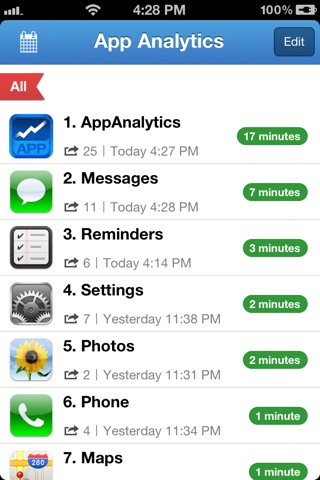
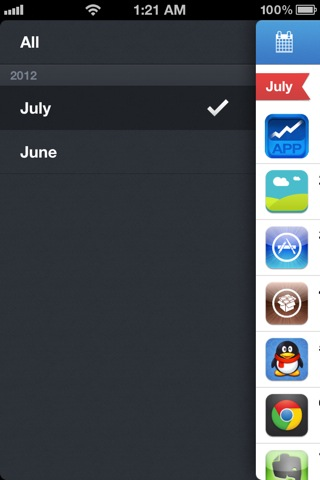

A Beautiful App Analyst
Sometimes you may wonder what are the most kill time apps that installed on your device and how long time you spent on each of them. If you have those questions, AppAnalytics is the app designed for you.
AppAnalytics tracks how long time you spent on each app and how many times you have launched it. Moreover, AppAnalytics auto generate reports for each month, help you to discover the most popular app for each month.
- Support iPhone, iPad and iPod Touch.
- Support iOS4 and later.
- Support more than 30 languages, which include English, German, French, Chinese, Japanese, Russian, Italian, Swedish, Hebrew etc.
- Open Cydia on your jailbreak device
- Search "AppAnalytics"
- If your searching return multiple result, select the one host by BigBoss.
- Tap the "install" button on the top-right corner.
